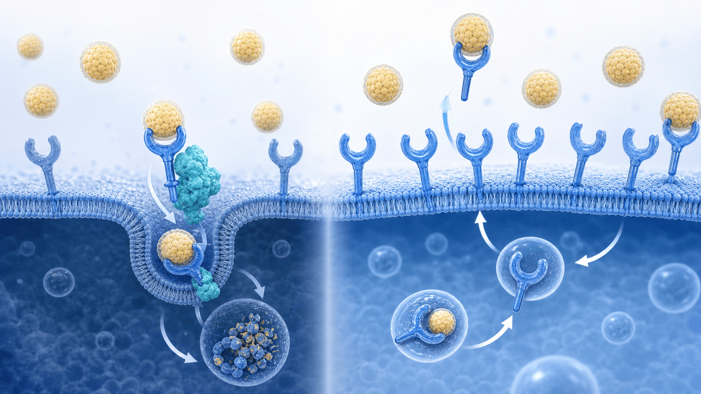
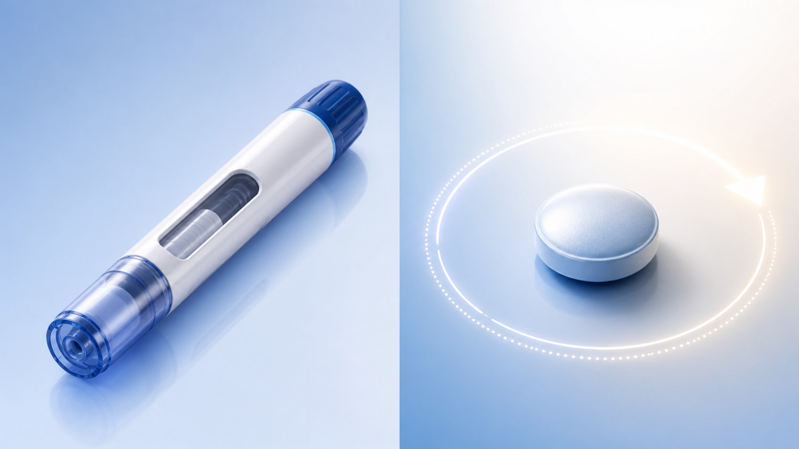

PATIENT EDUCATION · CARDIOLOGY
콜레스테롤 약을
주사 말고 먹는 약으로?
아직 임상시험 초기 단계인 '경구 PCSK9 억제제' 후보 이야기 — 지금 처방되는 약은 아닙니다
02
CHAPTER 01 · WHAT IS PCSK9
PCSK9가 무엇인가요
간에서 나쁜 콜레스테롤(LDL)을 치우는 '수거 통로'를 망가뜨리는 단백질입니다
간 표면의 LDL 수용체가 혈액 속 LDL을 치우는데, PCSK9가 이 수용체에 달라붙어 함께 분해시킵니다.
- 수용체가 줄면 LDL이 덜 치워져 콜레스테롤이 올라갑니다.
- PCSK9를 막으면 수용체가 다시 늘어 콜레스테롤이 강하게 떨어집니다.
- 이 원리의 주사제는 이미 사용 중 — 이번 연구는 이를 알약으로 만들려는 시도입니다.
PCSK9의 역할
수용체 분해
LDL 수거 통로를 줄여 콜레스테롤을 올립니다.
PCSK9를 막으면
수용체 재활용↑
통로가 늘어 LDL이 더 치워지고 수치가 내려갑니다.

03
CHAPTER 02 · SHOT vs PILL
주사제 vs 먹는 알약
이미 쓰이는 PCSK9 주사 대신, 하루 한 번 먹는 알약을 만들 수 있을까가 핵심입니다
지금의 PCSK9 치료
주사제 (이미 사용 중)
현재 쓰이는 PCSK9 억제제는 2주~6개월 간격으로 맞는 주사입니다. 효과는 좋지만 주사라는 점이 부담이 될 수 있습니다.
이번 연구의 후보
하루 한 번 먹는 알약
AZD0780은 하루 한 번 먹는 알약 형태의 PCSK9 억제제 후보입니다. 음식의 영향이 없고, 반감기가 약 40시간이라 1일 1회 복용을 노립니다.

04
CHAPTER 03 · WHICH STAGE
지금 어느 단계의 약인가요
이제 막 사람에게 처음 써 본 '1상 임상시험' — 가장 초기 단계입니다
1상
신약 개발의 가장 초기 단계인 1상 임상시험입니다 — 안전성과 약효의 '첫인상'을 보는 소규모·단기 연구예요.
How it was tested
건강한 성인 40명과, 콜레스테롤이 높은 참가자를 대상으로 위약(가짜약)과 비교해 28일 동안 복용시켰습니다.
고콜레스테롤 참가자는 먼저 스타틴(로수바스타틴 20mg)을 복용한 뒤, 거기에 이 후보약 또는 위약을 더해 추가 효과를 봤습니다.
아직 심장병을 줄였는지를 본 연구는 아니고, 콜레스테롤 수치 변화를 본 초기 시험입니다.
05
CHAPTER 04 · RESULTS
콜레스테롤을 얼마나 낮췄나요
스타틴 위에 이 알약을 더했을 때, LDL이 단계적으로 더 내려갔습니다
스타틴만
LDL 약 55% 감소
먼저 스타틴(로수바스타틴 20mg)만으로 치료 전보다 LDL이 약 55% 내려간 상태에서 시작했습니다.
+ 알약 1mg
총 약 70%까지
여기에 이 후보약 1mg을 더하니 위약 대비 약 29% 더 떨어져, 치료 전 대비 총 약 70% 감소했습니다.
+ 알약 30mg
총 약 80%까지
30mg에서는 위약 대비 약 51% 더 떨어져, 치료 전 대비 총 약 80%까지 내려갔습니다.
100%
치료 전
45%
스타틴 −55%
30%
+1mg · 총 −70%
스타틴 추가 −29%
20%
+30mg · 총 −80%
스타틴 추가 −51%
06
CHAPTER 05 · SAFETY & LIMITS
안전한가요, 그리고 한계는요
초기 신호는 괜찮아 보이지만, 아직 확인할 것이 훨씬 많습니다
이 짧은 시험에서는 중대한 부작용(SAE)이 보고되지 않았습니다. 다만 이는 소수 인원을 28일만 본 결과입니다.
가장 중요한 한계는, 이 연구가 본 것은 콜레스테롤 수치(대리지표)일 뿐 실제로 심근경색·사망을 줄였는지는 아직 증명되지 않았다는 점입니다. 또한 1상은 가장 초기·소규모·단기 시험이고, 제약사가 주도했습니다. 그래서 지금 처방할 수 있는 약이 아니며, 앞으로 더 큰 시험을 통과해야 실제 약이 될 수 있습니다.
초기 안전성
중대 부작용 없음
단, 소수·28일 단기 관찰 결과 (장기 안전성 미확인).
아직 모르는 것
심장병 예방 미입증
콜레스테롤만 봤을 뿐, 사건 감소는 후속 연구 필요.
07
CHAPTER 06 · KEY TAKEAWAYS
오늘 꼭 기억할 점
희망적인 후보지만, 지금은 '검증된 약'으로 관리하는 것이 정답입니다
01
PCSK9를 막으면 간이 LDL을 더 잘 치워 콜레스테롤이 강하게 떨어집니다
02
이 약은 주사 대신 하루 한 번 먹는 알약으로 만들려는 후보입니다
03
초기 시험에서 스타틴에 더했을 때 LDL이 총 약 70~80%까지 내려갔습니다
04
하지만 아직 1상(가장 초기 단계)이고, 심장병을 줄이는지는 미확인입니다
05
현재 처방할 수 없는 미승인 후보약입니다 — 미래에 나올 수 있는 약일 뿐입니다
→
지금은 스타틴 등 검증된 치료와 생활습관으로 콜레스테롤을 꾸준히 관리하세요
END OF DECK · THANK YOU
콜레스테롤 관리,
지금 할 수 있는 것부터
먹는 콜레스테롤 약이나 내 콜레스테롤 관리에 대해 궁금한 점이 있으시면 언제든 문의해 주세요
Phone
031-893-4560
Address
경기 용인 수지구
광교중앙로 298, 4층
광교중앙로 298, 4층
Specialty
순환기내과 · 일반내과
5대암 검진
5대암 검진
SCAN TO REVISIT
집에서 다시 보기
QR을 스캔하면 핸드폰에서
같은 자료를 다시 볼 수 있어요
같은 자료를 다시 볼 수 있어요